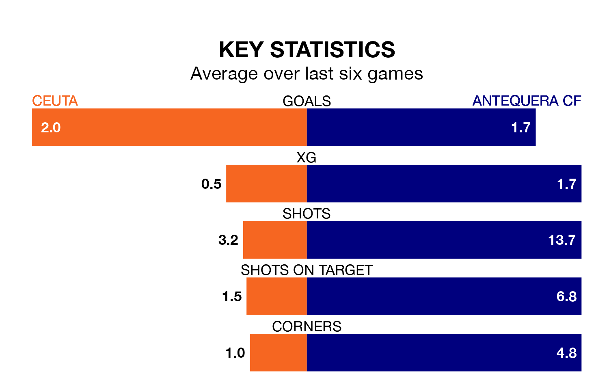

Antequera CF visit Ceuta on early Sunday on the back of four consecutive wins in Primera Division RFEF Group 2.
Antequera have picked up 13 points from their last six games, and they face a Ceuta side who lost their last match, and have collected the same number of points from the last possible 18.
With 46 goals in 34 games so far this season, Ceuta are scoring more than average in the league with 1.4 goals per game. And they are conceding fewer than average, letting in 34 goals at a rate of 1.0 per game.
Antequera are also above average scorers, with 1.3 goals per game, compared to a league average of 1.1. They have conceded 1.2 goals per game.
In Luis Miguel Redondo Fernandez, the visitors have one of the league's most on-form strikers so far this season. He has notched 10 goals in 23 appearances, to sit second in the scoring charts.
His goal rate of one every 197 minutes is quicker than that of Cedric Wilfried Teguia Noubi, the home side's top scorer with a goal every 289 minutes, and a total of six goals in 22 games.
Ceuta are fifth in the table after 34 games, of which they have won 15 and drawn 11, earning 56 points.
Antequera are two places behind Ceuta in seventh, with 15 wins and eight draws putting them on 53 points.
In the last three years, Ceuta and Antequera have played each other on three occasions. They won one each, and they drew once.
Their last meeting was on January 3, when they played out a 0-0 draw.
Ceuta's last match was on Sunday, a 1-0 loss against Real Murcia.
Antequera beat UD Ibiza 3-1 last time out, also on April 28, with David David, Destiny Ilahude Enebeli and Luis Miguel Gutiérrez Ramírez on the scoresheet.
Updated: 10:44 (UTC), 30/04/24